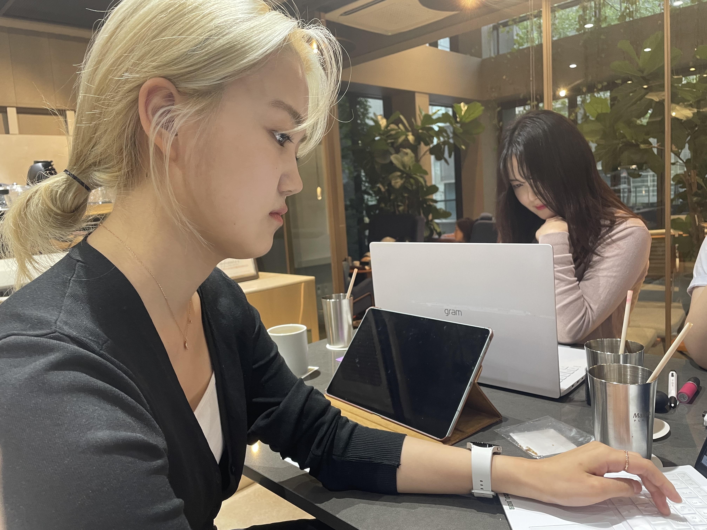

오늘 고등학교 친구들을 만났다. 반가웠다. 성원희가 일기쓰라고 했으면서 쓰니까 웃었다.
친구들을 만나 공부하려고 했지만 실제로 공부한 아이는 2명에서 3명정도 였다. 물론 나는 공부를 안했다.
한자를 외웠냐는 원희의 질문에 대답할 수 없었다. 그래도 이자식아 나 노래 가는 쓸 줄 알아. 바보 성원희.
나는 공부를 하진 않았지만 배가 고파져서 밥을 먹으러 가자고 했지만 먹금당했다. 그래서 유튜브로 먹방을 보는데 갑자기
원희가 일기를 쓰라고 했다. 일기를 쓰는 날 원희가 찍고 있다. 원희가 강조하던 인스타감성을 과연 너는 찍을 수 있을까?
인스타 감성은 너무 어렵다. 사진을 찍었더니 가희 어머니의 카톡프사와 같다고 했다...불만이 있는건 아니지만 서운하긴 하다.
탈룰라 아님. 원희야 즐겁니? 내 일기 염탐하지마.
